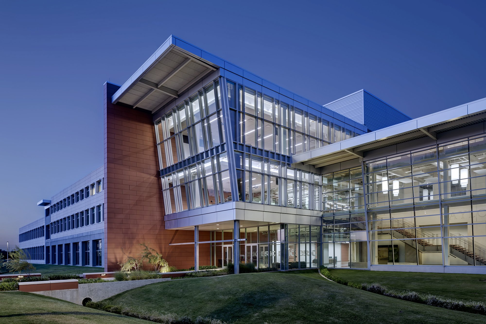

Welcome to the SeDIS Laboratory

Baylor University
Department of Electrical & Computer Engineering
The Secured and Dependable Intelligent Systems (SeDIS) lab in the Department of Electrical and Computer Engineering Department of Baylor University is directed by Prof. Ernest Bonnah and located in the Baylor Research and Innovation Collaborative (BRIC) building. The SeDIS Laboratory focuses on investigating and proposing theories, methods, tools, and protocols for supporting modeling, design, formal verification and securing complex, intellingent, and dependable embedded as well as cyber-physical systems (CPS). The primary aim of SeDIS lab is to enhance the quality of service, reliability, safety, and security of complex computing systems.
In the SeDIS Lab, we conduct interdisciplinary cutting-edge research in the specific areas of
SeDIS Lab has openings for two fully funded Ph.D. positions for Fall 2025. Read the details in Vacancies.
Our paper ‘Efficient SMT-Based Model Checking for HyperTWTL’ has been accepted for the 25th International Conference on Formal Engineering Methods (ICFEM 2024) to be held in Hiroshima, Japan. Find the proceedings here.
SeDIS Lab has openings for two fully funded Ph.D. positions for Spring 2025. Read the details in Vacancies.